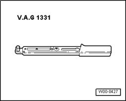
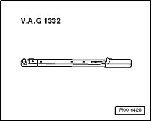

LEMON Manuals
: Even more car manuals for everyone: 1960-2025
Home
>>
Volkswagen
>>
2004
>>
Touareg (7LA) V6-3.2L (BAA)
>>
Repair and Diagnosis
>>
Body and Frame
>>
Bumper
>>
Front Bumper
>>
Tools and Equipment
Front Bumper: Tools and Equipment
Tools
Special tools, testers and auxiliary items required

-
Torque Wrench
5 to 50 Nm
V.A.G 1331

-
Torque wrench
40 to 200 Nm
V.A.G 1332 (
40 to 200 Nm
)